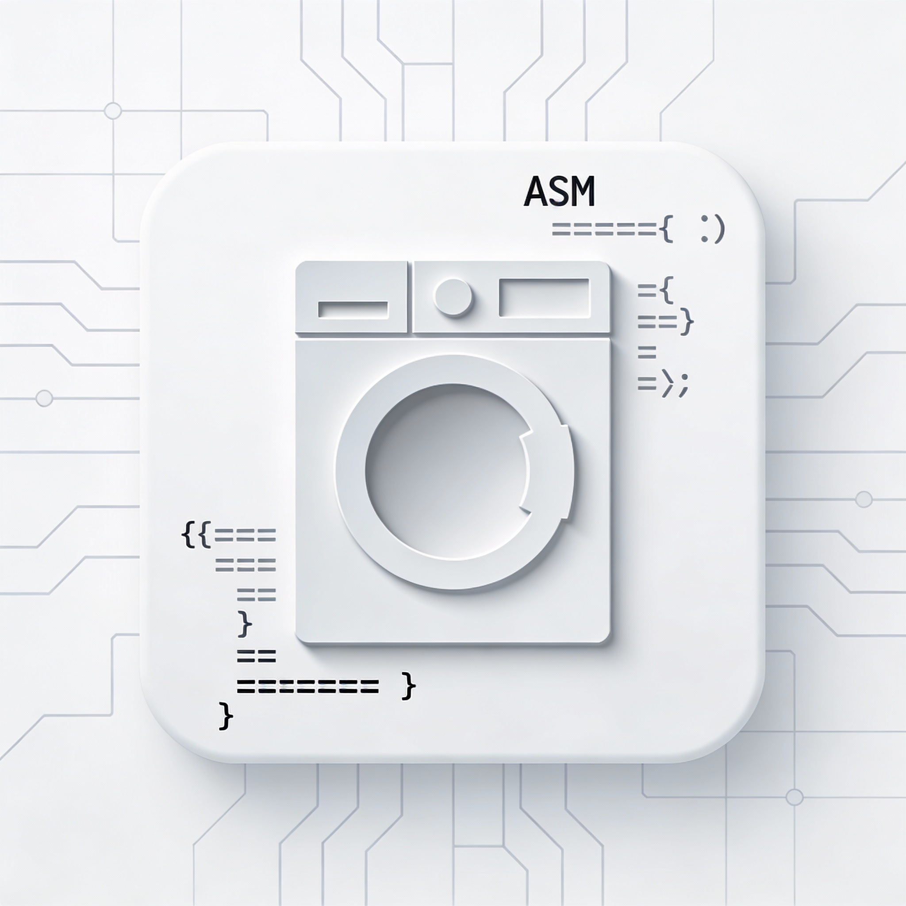

My name is Iker. I'm a Computer Science student focused on system administration. I've learned the fundamentals of several programming languages and system management techniques.
Some Projects

Assembly Washing Machine
Medium complexity project simulating a washing machine using assembly language.